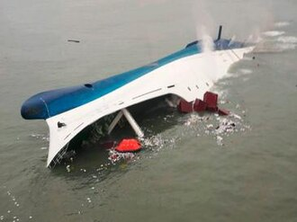

THE SINKING OF THE MV SEWOL
On April 16, 2014, the South Korean ferry MV Sewol departed Incheon for the resort island of Jeju. On board were 476 people, including 325 high school students from Danwon High School on a field trip. During a sharp turn in the Maenggol Channel—an area known for its strong currents—the ship began to list severely to the port side. The vessel, which had been illegally modified to add more passenger cabins, was carrying more than double the cargo limit and had significantly less ballast water than required for stability. As the cargo shifted, the ship lost its ability to right itself.

The "Stay Put" Order: The tragedy was profoundly exacerbated by a catastrophic failure in leadership. As the ferry tilted to a 45-degree angle, the crew repeatedly broadcasted instructions over the intercom for passengers to remain in their cabins and stay put. Fearing they would slip on the steep floors, the students obeyed, waiting for help that would never arrive inside the hull. Meanwhile, the captain and several crew members were among the first to be rescued by the Coast Guard, leaving the passengers trapped as the ship eventually capsized and sank completely.
The Silent Heroism and National Grief: While the official response was slow and disorganized, some individuals showed incredible bravery. Several crew members and students stayed behind to help others escape, losing their own lives in the process. When the ship finally submerged, 304 people had perished, the vast majority of them teenagers. The disaster sparked a massive wave of national mourning and incandescent rage toward the government and the shipping company. It led to the dissolution of the South Korean Coast Guard (later reorganized) and a massive political scandal regarding the government’s botched rescue operation.
Key Facts
Date: April 16, 2014
Location: Off the coast of Donggeocha Island, South Korea
Casualties: 304 dead (approximately 250 were students)
Cause: A combination of illegal structural modifications, severe overloading of cargo, insufficient ballast, and a sharp turn, compounded by the captain's abandonment of the ship and orders for passengers to remain in their cabins.
The Sewol disaster remains one of the most heartbreaking maritime events in modern history. It serves as a grim warning against corporate greed, the failure of regulatory oversight, and the danger of blind obedience to authority in crisis situations. The tragedy forced South Korea to undergo a deep cultural and legal reckoning regarding safety standards, corruption, and the accountability of those in power. To this day, the yellow ribbon remains a symbol of remembrance for the victims and a call for a safer society.